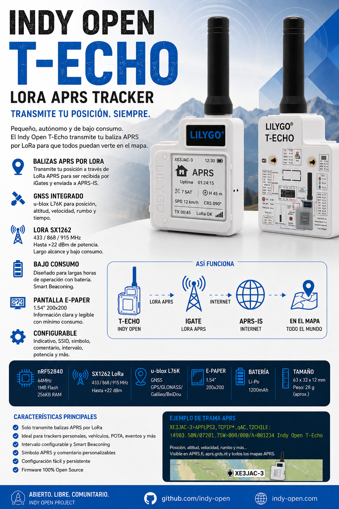

INDY OPEN T-ECHO
Tracker LoRa APRS compacto, autónomo y de bajo consumo basado en LILYGO T-Echo. Obtiene tu posición mediante GNSS y transmite periódicamente una baliza APRS por LoRa.

Un tracker APRS hecho para transmitir
La primera versión de Indy Open T-Echo está pensada con un objetivo muy concreto: obtener una posición GNSS válida, construir una baliza APRS y transmitirla utilizando LoRa. Sin convertir el equipo en un mensajero, un iGate o una estación APRS completa.
Transmite posición APRS para que un iGate compatible pueda enviarla a APRS-IS.
Posición, altitud, velocidad y rumbo cuando los datos estén disponibles.
Comunicación LoRa configurable según el hardware y la región utilizada.
Diseñado para trackers portátiles donde autonomía y simplicidad son prioridades.
Información APRS esencial visible con muy bajo consumo de energía.
Indicativo, SSID, símbolo, comentario, intervalo, potencia y más.
Así funciona
Una pantalla pensada para APRS
En lugar de mostrar información genérica de diagnóstico, la interfaz estará orientada al uso real como tracker: indicativo, estado GNSS, satélites, altitud, movimiento, última transmisión y estado LoRa.
Configuración prevista
| Parámetro | Función |
|---|---|
| Callsign | Indicativo de radioaficionado |
| SSID | Identificador APRS del tracker |
| Símbolo APRS | Icono mostrado en los mapas |
| Comentario | Texto incluido en la baliza |
| Intervalo | Tiempo entre transmisiones |
| Potencia TX | Potencia de transmisión LoRa |
| Smart Beaconing | Ajuste automático según movimiento |
| Frecuencia | Configuración compatible con hardware y región |
Ejemplo conceptual de baliza
XE3JAC-3>APLPS3:!1903.50N/09812.00W>000/012/A=007041 Indy Open T-Echo
La baliza puede incluir indicativo, posición, altitud, velocidad, rumbo, símbolo APRS y comentario. El formato definitivo podrá cambiar durante el desarrollo.
Smart Beaconing
El firmware contempla adaptar el intervalo de transmisión al movimiento del equipo. Cuando permanece detenido puede espaciar las balizas; al desplazarse puede aumentar la frecuencia de actualización y reaccionar a cambios importantes de rumbo.
Estado del proyecto
Indy Open T-Echo se encuentra actualmente en fase de definición e implementación. La interfaz, parámetros y comportamiento final del firmware podrán evolucionar a medida que se realicen pruebas sobre hardware real.
Open Source · Open Radio
Indy Open busca desarrollar herramientas abiertas para radioaficionados utilizando hardware disponible comercialmente y firmware que pueda estudiarse, modificarse, compilarse, mejorarse y compartirse.